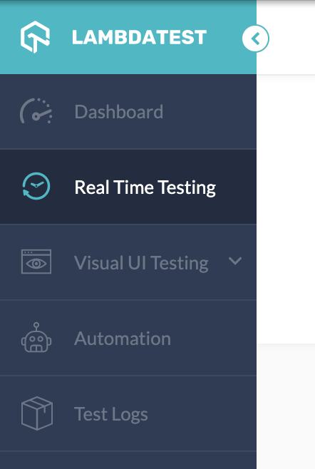

Step 2: Using Lambdatest
Get started with Real Time Testing
Now we'll start using Lambdatest. Navigate to lambdatest.com and create a free account. You'll need to supply a valid email address and a password for your account.
If you are not automatically signed in, sign in and you should be forwarded to your Lambdatest dashboard. If you've never used Lambdatest before your dashboard should display a lot of zeroes, these are different usage statistics. In the side bar to the left you'll find the actual testing functions. We start by looking at "real time testing", click on it in the side bar menu.
Real time testing
You will now see a page where you can enter a URL, and choose between a lot of different browsers and OSes. This is what Lambdatest is used for: viewing your page as a user on a different platform or browser would see it. In the URL field you enter the website you wish to examine, and in the menus below you choose the browser and OS you wish to see it from (note that mobile OS's are available as well). Lambdatest will then open the website on a virtual machine and tunnel the screen output to you.
To start, enter this URL in the Place your URL field. Choose a browser and an OS that is available for free (choose one you are not running right now, it will be more fun), e.g. Google Chrome v. 76 on Windows 10. Press the Start button with the rocketship on it. You should now be able to read this text as it would look on Windows! (or some other platform, if you were already using windows, but why would you?)
This illustrates the utility Lambdatest provides. In the next step we start working on automating the cross browser testing process.